Datenexport
SCR-EXP-001·002·003·006 · Hub · Bereich festlegen · Exportoptionen · Download
Datenexport
- 1.1Bildschirmaufbau
- 1.2Bereich auswählen
- 1.3Filter und erwarteter Umfang
1.1Bildschirmaufbau
Überblick
Hier laden Sie Studiendaten als Datei herunter. Sie wählen zuerst den Typ, welche Daten Sie benötigen, und legen danach Bereich und Optionen fest. Die Typen unterteilen sich in 4 Typen mit Priorität 1, die direkt für Behördeneinreichungen verwendet werden, und 2 Typen mit Priorität 2 als unterstützende Unterlagen für die Auditvorbereitung. Ein Export braucht Zeit; deshalb läuft er so ab: Sie stellen eine Anfrage und erhalten eine Benachrichtigung, wenn er abgeschlossen ist.
Bildschirmbeschreibung
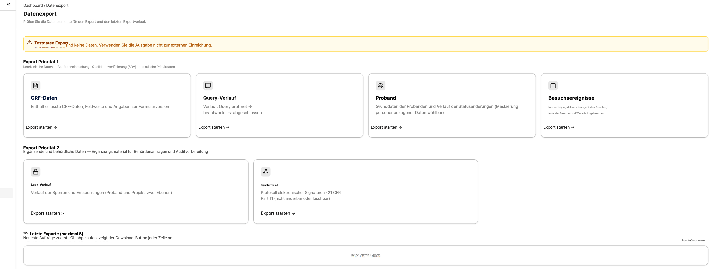
„Export starten →“ — wechselt zum Bereichsbildschirm dieses Typs 1.2. Jede Karte hat eine Schaltfläche.
„Gesamten Verlauf anzeigen →“ — öffnet die Übersicht aller bisherigen Exportaufträge. Hier finden Sie Dateien wieder, die Sie noch nicht heruntergeladen haben.
Der Navigationspfad lautet Dashboard / Datenexport.
Projektstatusbanner — derzeit steht dort: „Testdaten Export … Verwenden Sie die Ausgaben nicht für externe Einreichungen.“ Bei einem Projekt, dessen Betrieb beendet ist, wechselt der Banner zu grün: „Bestätigter Datenexport“.
Export Priorität 1 — „Kernklinische Daten — Behördeneinreichung · Quelldatenabgleich (SDV) · statistische Primärdaten“.
Aufbau der Karte — Typname · Inhalt · Export starten. Lesen Sie zuerst die Beschreibung, welche Daten enthalten sind, und wählen Sie dann den Typ (siehe Tabelle unten).
Export Priorität 2 — „Unterstützende und behördliche Daten — Behördenreaktion · Auditvorbereitung (unterstützende Unterlagen)“.
Letzte Exporte (maximal 5) — die neuesten Aufträge zuerst. Ob ein Export abgelaufen ist, zeigt der Download-Button der jeweiligen Zeile.
Wurde noch nichts exportiert, bleibt der Bereich mit „Keine letzten Exporte“ leer.
6 Exporttypen
| Priorität | Typ | Enthaltene Inhalte |
|---|---|---|
| Priorität 1 | CRF-Daten | Erfasste CRF-Daten und Feldwerte · Angaben zur Formularversion |
| Priorität 1 | Query-Verlauf | Bearbeitungsverlauf der Queries: eröffnet → beantwortet → abgeschlossen |
| Priorität 1 | Probanden | Grunddaten der Probanden und Verlauf der Statusänderungen |
| Priorität 1 | Besuchsereignisse | Daten zu durchgeführten Besuchen · fehlenden Besuchen · Wiederholungsbesuchen |
| Priorität 2 | Lock-Verlauf | Verlauf der Sperren und Entsperrungen (Ebene Proband · Projekt) |
| Priorität 2 | Signaturverlauf | Protokoll elektronischer Signaturen · 21 CFR Part 11 (nicht änderbar · nicht löschbar) |
Zu beachten
Leicht missverständliches Verhalten
- • Nur Datenmanager und Auditoren können diesen Bildschirm öffnen. Hauptprüfer, Studienpflegekräfte, Monitore und Workspace-Administratoren sehen ihn nicht im linken Menü. Nach Abschluss des Projekts ist der Export dennoch möglich, denn Unterlagen für Einreichung und Aufbewahrung müssen erstellt werden können.
1.2Bereich auswählen
Überblick
Wenn Sie einen Typ wählen, öffnet sich der Bildschirm, auf dem Sie festlegen, was enthalten sein soll. Den Bereich grenzen Sie auf drei Arten ein: Mit dem Site-Bereich wählen Sie die Einrichtung, mit Voreinstellungen übernehmen Sie häufig genutzte Kombinationen mit einem Klick, und im Bereichs-Baum markieren Sie Projekt, Einrichtung und Probanden direkt. Rechts folgt ein Filter nach Zeitraum und Formular 1.3.
Bildschirmbeschreibung
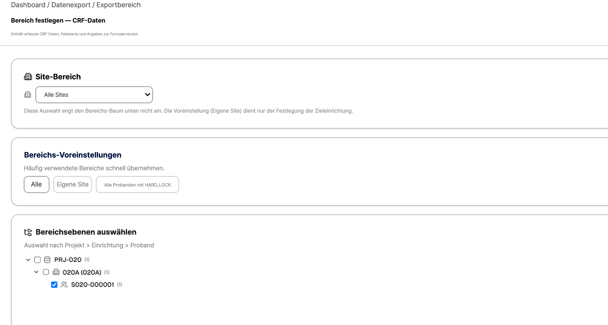
Site-Bereich — wählt die Zieleinrichtung. Allein durch diese Auswahl wird der Baum unten nicht eingeschränkt; sie legt nur fest, welche Einrichtung die Voreinstellung betrifft.
Bereichs-Voreinstellungen — übernehmen häufig genutzte Bereiche mit einem Klick. Die Zusammensetzung unterscheidet sich je Typ 2.1 · 2.2.
Bereichs-Baum — markieren Sie Projekt, Einrichtung und Probanden direkt. Wenn Sie eine höhere Ebene markieren, werden die darunter liegenden Ebenen mit ausgewählt.
Bereich festlegen — Typname und der Inhalt dieses Typs werden in der Überschrift angezeigt. Prüfen Sie hier, ob Sie im richtigen Typ sind.
Hinweis zum Site-Bereich — „Diese Auswahl engt den Bereichs-Baum unten nicht ein. Sie dient nur dazu, die Zieleinrichtung der Voreinstellung „Eigene Site“ festzulegen.“
Hinweis zu den Voreinstellungen — „Wendet häufig genutzte Bereiche schnell an.“
„Eigene Site“ ist ausgegraut, weil im Site-Bereich oben alle Sites gewählt sind; damit ist keine Zieleinrichtung bestimmt. Sobald Sie eine Einrichtung wählen, ist die Voreinstellung aktiv.
Hinweis zum Baum — „Auswahl nach Projekt > Einrichtung > Proband“. Bei manchen Typen wählen Sie nur bis zur Einrichtungsebene aus 2.1.
Die Zahl in Klammern neben einem Eintrag ist die Anzahl der Datensätze darunter.
Zu beachten
Unbedingt prüfen Datenschäden · Formular nicht abschließbar
- • Allein durch die Auswahl der Site wird der Bereich nicht eingegrenzt. Diese Angabe legt nur fest, welche Einrichtung die Voreinstellung „Eigene Site“ meint. Exportiert werden tatsächlich die im Baum darunter markierten Einträge. Wenn Sie nur Einrichtungen wählen und den Baum leer lassen, wird nichts exportiert.
1.3Filter und erwarteter Umfang
Überblick
Rechts befinden sich die Filter, mit denen Sie den im Baum gewählten Bereich weiter eingrenzen. Die Filter unterscheiden sich je Typ: der Zeitraumfilter gilt für alle Typen, DataForm-Filter und Visit-Filter erscheinen nur bei den Typen, zu denen diese Daten gehören. Unten zeigt die erwartete Anzahl der Datensätze vorab, wie groß der Export ungefähr wird.
Bildschirmbeschreibung
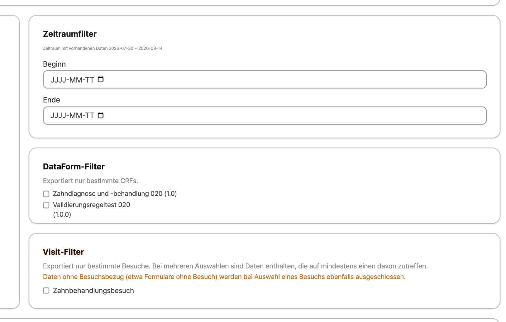
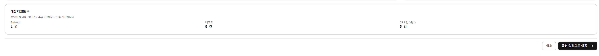
Zeitraumfilter — Start. Ist das Feld leer, beginnt der Zeitraum am Anfang.
Zeitraumfilter — Ende. Ist das Feld leer, reicht der Zeitraum bis zum Ende.
DataForm-Filter — exportiert nur bestimmte CRFs. Ohne Auswahl sind alle enthalten.
Visit-Filter — exportiert nur bestimmte Besuche. Wählen Sie mehrere aus, sind Daten enthalten, die auf mindestens einen davon zutreffen.
Zu den Exportoptionen → — öffnet das Fenster mit den Exportoptionen 3.1.
Zusätzlich wird der Zeitraum mit vorhandenen Daten angezeigt. Liegt ein Datum außerhalb davon, bleibt das Ergebnis leer; richten Sie den Zeitraum deshalb danach aus.
Hinweis zum DataForm-Filter — „Exportiert nur bestimmte CRFs.“
Die rote Warnung beim Visit-Filter lautet: „Daten ohne Besuchsbezug (z. B. besuchsunabhängige Formulare u. Ä.) werden bei Auswahl eines Besuchs ebenfalls ausgeschlossen.“
Erwartete Datensätze — zeigt vor dem Export die Größenordnung mit drei Zahlen: Subject · Datensätze · CRF-Instanzen. Ohne Bereichsauswahl wird nichts berechnet.
Abbrechen — verwirft die Bereichsauswahl und kehrt zurück.
Zu beachten
Unbedingt prüfen Datenschäden · Formular nicht abschließbar
- • Setzen Sie einen Besuchsfilter, fallen Daten ohne Besuchsbezug mit heraus. Der Bildschirm weist selbst in roter Schrift darauf hin. Wer nur bestimmte Besuche erhalten möchte, kann dabei auch CRFs verlieren, die an keinen Besuch gebunden sind. Für Einreichungsexporte ist es deshalb sicherer, den Besuchsfilter leer zu lassen.
Bereich je Typ festlegen
- 2.1Query-Verlauf · Probanden
- 2.2Besuchsereignisse · Lock · Signatur
2.1Query-Verlauf · Probanden
Überblick
Der Aufbau des Bereichsbildschirms bleibt bei jedem Typ gleich. Unterschiedlich sind nur die drei Bereichs-Voreinstellungen und die Filterauswahl rechts. Voreinstellungen, die nach Status filtern, lassen sich derzeit nicht anklicken: Die Bedingung fehlt noch in der serverseitigen Bereichsdefinition. Ein Klick würde dasselbe Ergebnis wie „Alle“ liefern. Damit keine falsche Sicherheit entsteht, sind sie deaktiviert.
Bildschirmbeschreibung
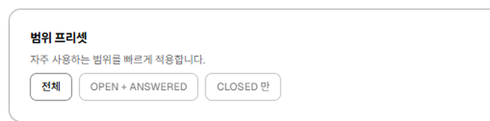
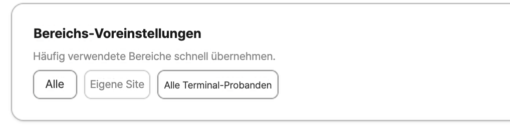
Voreinstellungen von Query-Verlauf — Alle · OPEN + ANSWERED · nur CLOSED. Die letzten beiden sind nach Status ausgerichtet und derzeit deaktiviert. Wenn Sie nur unbearbeitete Queries erhalten möchten, wählen Sie die Ziele direkt im Baum aus.
Voreinstellungen von Probanden — Alle · Eigene Site · alle Terminal-Probanden. Die letzte ist verwendbar: Sie wählt auf einmal alle Probanden aus, die in einem Endstatus festgehalten sind (Screening-Abbruch · vorzeitiger Abbruch · Verlust im Follow-up · Tod · Studienende), also fünf Status.
Voreinstellungen je Typ und Verfügbarkeit
| Typ | 3 Voreinstellungen | Verfügbarkeit |
|---|---|---|
| CRF-Daten | Alle · Eigene Site · alle Probanden mit HARD_LOCK | Alle verwendbar |
| Query-Verlauf | Alle · OPEN + ANSWERED · nur CLOSED | Die letzten 2 deaktiviert |
| Probanden | Alle · Eigene Site · alle Terminal-Probanden | Alle verwendbar |
| Besuchsereignisse | Alle · Eigene Site · nur geplante Besuche | Die letzte deaktiviert |
| Lock-Verlauf | Alle · Subject-Lock · Project-Lock | Die letzten 2 deaktiviert |
| Signaturverlauf | Alle · DataInstance-Signatur · DataLock-Signatur | Alle verwendbar |
Zu beachten
Leicht missverständliches Verhalten
- • Ausgegraute Voreinstellungen sind kein Fehler. Würde ein Klick dasselbe Ergebnis wie „Alle“ liefern, könnte der Eindruck entstehen, ein Filter sei aktiv. Deshalb sind sie bewusst gesperrt. Fahren Sie mit der Maus über die Schaltfläche, wird der Grund angezeigt. Um den Bereich einzugrenzen, wählen Sie die Ziele derzeit direkt im Bereichs-Baum aus.
2.2Besuchsereignisse · Lock · Signatur
Überblick
Dieser Abschnitt behandelt die Voreinstellungen für die Typen mit Priorität 2 und für Besuchsereignisse. Nur bei der Signaturhistorie sind alle drei Voreinstellungen verwendbar; bei Besuchsereignissen und Lock-Verlauf sind die Voreinstellungen nach Status deaktiviert. Trotz unterschiedlicher Typen bleiben Platz und Bedienung von Site-Bereich · Bereichs-Baum · Zeitraumfilter · erwarteter Anzahl der Datensätze gleich 1.2 · 1.3.
Bildschirmbeschreibung
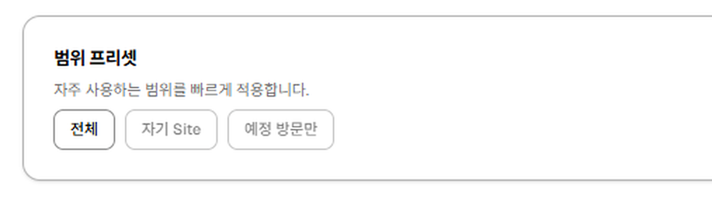
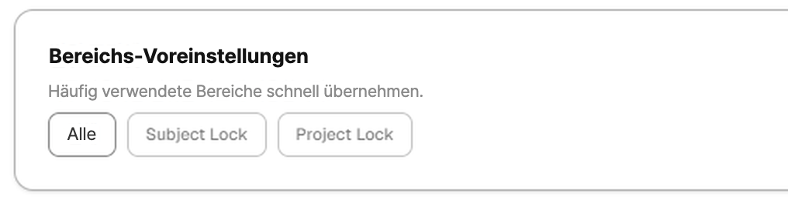
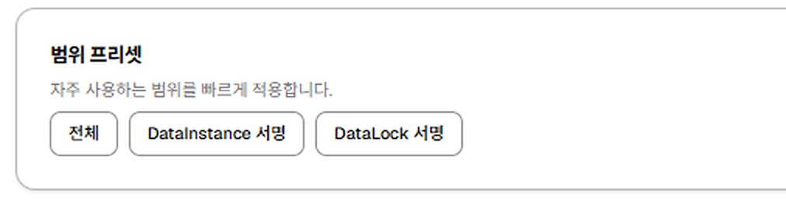
Besuchsereignisse — nur geplante Besuche ist deaktiviert. Um nur geplante Besuche zu erhalten, wählen Sie rechts im Visit-Filter die Besuche direkt aus.
Lock-Verlauf — Subject-Lock · Project-Lock sind beide deaktiviert. Da sich die beiden Ebenen nicht getrennt auswählen lassen, exportieren Sie zuerst alles und trennen Sie danach in der Datei.
Signaturverlauf — DataInstance-Signatur (Datensignatur) und DataLock-Signatur (Sperrsignatur) sind verwendbar. Nutzen Sie sie, um Signaturarten getrennt zu exportieren.
Was sich je Typ unterscheidet · was gleich bleibt
- • Unterschiedlich — die drei Bereichs-Voreinstellungen · die Filter rechts · die Ebenen, die im Baum gewählt werden können
- • Der DataForm-Filter gibt es nur bei CRF-Daten.
- • Der Visit-Filter gibt es nur bei CRF-Daten und Besuchsereignissen.
- • Probanden wählen Sie im Baum nur bis zur Einrichtungsebene (die Probandendaten selbst sind der Exportgegenstand).
- • Gleich ist — Site-Bereich · Bereichs-Baum · Zeitraumfilter · erwartete Anzahl der Datensätze · Schaltflächen unten
Zu beachten
Leicht missverständliches Verhalten
- • Der Lock-Verlauf lässt sich nicht nach Ebenen getrennt abrufen. Die Anfrage, Sperren auf Probanden- und Projektebene getrennt zu erhalten, lässt sich mit den derzeitigen Voreinstellungen nicht erfüllen. Exportieren Sie daher alles und trennen Sie die Ebenen in der Ergebnisdatei. Der Export selbst läuft regulär.
Optionen und Ausführung
- 3.1Exportoptionen festlegen
- 3.2Export läuft
- 3.3Export abgeschlossen und herunterladen
3.1Exportoptionen festlegen
Überblick
Dieses Fenster legen Sie fest, nachdem Sie den Bereich bestimmt haben: wie exportiert werden soll. Die Punkte sind nummeriert; prüfen Sie sie also von oben nach unten. Die Standardwerte reichen auch für einen Export. Handelt es sich um eine Einreichung bei Behörden, prüfen Sie unbedingt ③ PII-Maskierung und ⑤ archivierte Daten.
Bildschirmbeschreibung
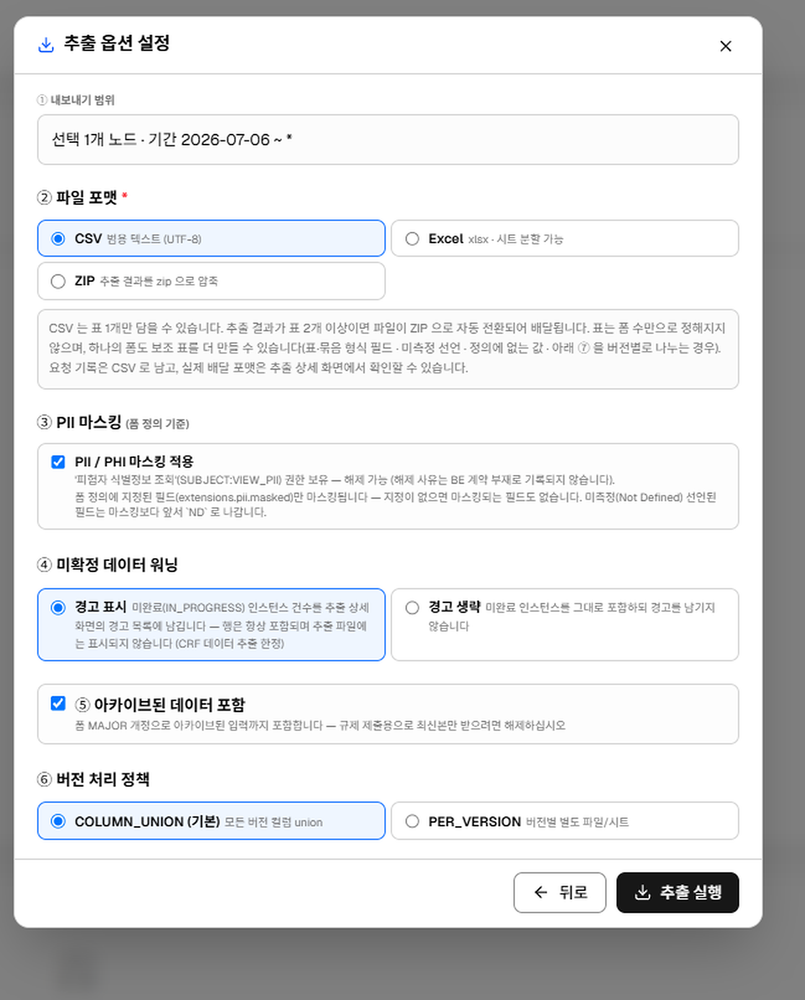
② Dateiformat — CSV (kommagetrennter Text) · Excel (Tabellenblätter teilbar) · ZIP (Ergebnis komprimiert): drei Formate.
③ PII-Maskierung — maskiert Werte, mit denen Probanden identifiziert werden können. Ohne Berechtigung ist sie fest eingeschaltet.
④ Warnung bei unvollständigen Daten — legen Sie fest, ob eine Warnung angezeigt oder keine Warnung ausgegeben werden soll, wenn noch nicht fertig eingegebene Daten enthalten sind. In beiden Fällen sind die Zeilen immer enthalten; nur die Warnung wird unterschiedlich behandelt.
⑤ Archivierte Daten einschließen — enthält auch frühere Eingaben, die bei einer größeren Überarbeitung eines Formulars archiviert wurden. Wenn Sie für eine Einreichung nur die neueste Fassung erhalten möchten, deaktivieren Sie die Option.
⑥ Versionsbehandlung — wenn Formularversionen gemischt sind, wählen Sie COLUMN_UNION (Spalten aller Versionen in einer Tabelle zusammengeführt) oder PER_VERSION (getrennte Datei oder Blatt je Version).
Export starten — stellt die Anfrage und wechselt zum Fortschrittsbildschirm 3.2.
① Exportbereich — der zuvor festgelegte Bereich wird hier zusammengefasst angezeigt. Ändern lässt er sich hier nicht.
Schließen — schließt nur das Optionsfenster. Der Bereichsbildschirm bleibt bestehen.
Hinweis zum Format — Bei zwei oder mehr Tabellen wird auch CSV automatisch als ZIP gepackt und geliefert. Im Anfrageverlauf bleibt CSV vermerkt; das tatsächlich gelieferte Format sehen Sie im Abschlussbildschirm.
Hinweis zur Maskierung — Ohne Berechtigung steht dort „Maskierung ist erzwungen (nicht änderbar)“, mit Berechtigung „Aufhebung möglich“. Der Grund für die Aufhebung wird nicht gespeichert.
Archiv-Hinweis — „Wenn Sie für eine Einreichung nur die neuesten Daten benötigen, deaktivieren Sie die Option.“
← Zurück — kehrt zum Bereichsbildschirm zurück. Ihre Optionen bleiben erhalten.
Zu beachten
Unbedingt prüfen Datenschäden · Formular nicht abschließbar
- • Die ZIP-Datei enthält nicht die eigentlichen CRF-Anhänge. In den Tabellen steht nur die Kennung des Anhangs. Benötigen Sie die Originale der Anhänge für eine Behördeneinreichung, sammeln Sie diese über ein gesondertes Verfahren.
- • Die Maskierung wird über Berechtigungen festgelegt, nicht über Rollen. Nur Benutzer mit der Berechtigung zur Abfrage von Identifikationsdaten der Probanden können sie ausschalten; Auditoren haben diese Berechtigung nicht. Da der Grund für die Aufhebung nicht gespeichert wird, dokumentieren Sie beim Erstellen einer Datei mit Identifikationsdaten im Studienteam gesondert, wer die Datei warum erhalten hat.
3.2Export läuft
Überblick
Mit dem Start wechselt der Export automatisch zum Auftragsbildschirm. Der Export läuft auf dem Server und ist nicht sofort fertig; dieser Bildschirm aktualisiert sich alle 5 Sekunden selbst und zeigt den Fortschritt. Das Schließen des Bildschirms bricht den Auftrag nicht ab. Nach Abschluss kommt eine Benachrichtigung, und Sie finden ihn später im Exportverlauf wieder.
Bildschirmbeschreibung
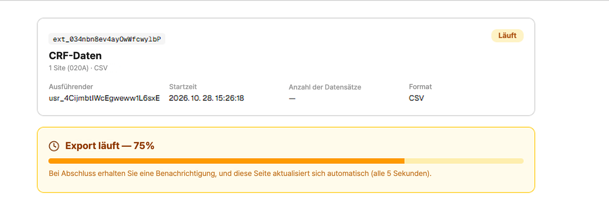
Export läuft — N % mit Fortschrittsbalken.
Der Balken zeigt den vom Server gemeldeten Fortschritt unverändert an.
Hinweis — „Bei Abschluss erfolgt eine Benachrichtigung; diese Seite aktualisiert sich automatisch (Intervall 5 Sekunden).“ Bricht die automatische Aktualisierung ab, ändert sich der Text und zeigt an, dass der Vorgang unterbrochen ist.
Auftragsnummer — beginnt mit ext_. Nennen Sie diese Nummer bei Rückfragen.
Abzeichen „Läuft“ — wechselt nach Abschluss zu „Abgeschlossen“ 3.3.
Zusammenfassung von Typ und Bereich — „1 Site (020A) · CSV“.
Ausführender · Startzeit · Datensätze · Format. Die Anzahl der Datensätze steht bis zum Ende auf —.
Zu beachten
Leicht missverständliches Verhalten
- • Ein Schließen des Bildschirms bricht den Export nicht ab. Sie können warten oder andere Arbeiten erledigen; nach Abschluss kommt eine Benachrichtigung. Haben Sie die Benachrichtigung verpasst, finden Sie den Auftrag mit derselben Auftragsnummer unter „Letzte Exporte“ auf dem Datenexport-Bildschirm oder unter „Gesamten Verlauf anzeigen“ und laden die Datei dort herunter.
3.3Export abgeschlossen und herunterladen
Überblick
Wenn der Export fertig ist, wechselt derselbe Bildschirm in den Status Abgeschlossen. Die Datei wird nicht dauerhaft auf dem Server gespeichert, sondern ist nur bis zu einem Ablaufdatum verfügbar; danach müssen Sie erneut exportieren. Der Abschlussbildschirm zeigt außerdem Warnungen aus dem Exportvorgang sowie den Prüfwert zur Integrität, mit dem Sie feststellen können, ob die Datei unbeschädigt ist.
Bildschirmbeschreibung
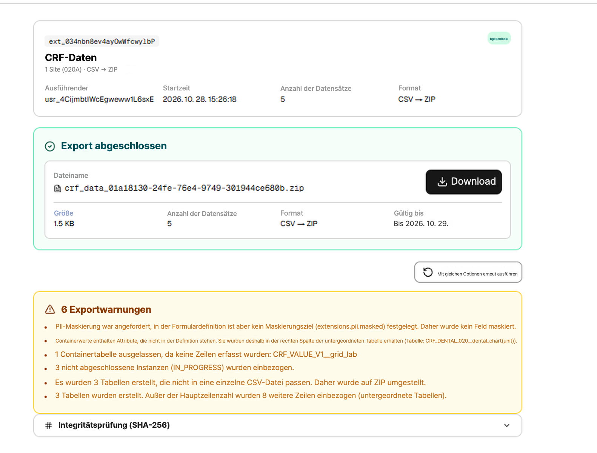
„Herunterladen“ — lädt die Datei herunter.
„Mit gleichen Optionen erneut ausführen“ — exportiert mit demselben Bereich und denselben Optionen erneut. Verwenden Sie das, wenn die Gültigkeit abgelaufen ist.
„Abgeschlossen“-Abzeichen — während des Vorgangs stand dort „Läuft“.
Dateiname — enthält die Auftragsnummer, damit Sie ihn mit dem Verlauf abgleichen können.
Größe · Anzahl der Datensätze · Format. Das Format CSV → ZIP entsteht, weil mehr als eine Tabelle automatisch gepackt wurde 3.1.
Gültig bis — nach diesem Zeitpunkt läuft der Download-Link ab.
N Exportwarnungen — der Export war erfolgreich, aber es gibt etwas zu beachten. Beispiele: Es lagen keine Maskierungsziele vor · nicht fertige Eingaben sind enthalten · es gibt mehrere Tabellen und sie wurden gepackt. Der Bildschirm zeigt die Meldungen des Servers unverändert an.
Integritätsprüfung (SHA-256) — klappt den Fingerabdruck der Datei auf. Damit prüfen Sie, ob die heruntergeladene Datei bei der Übertragung beschädigt wurde.
Zusammenfassung von Typ und Bereich — an derselben Stelle wie auf dem Bildschirm während des Vorgangs.
Zu beachten
Unbedingt prüfen Datenschäden · Formular nicht abschließbar
- • Reichen Sie nicht ein, ohne die Exportwarnungen gelesen zu haben. Eine Warnung ist kein Fehler, sie kann aber darauf hinweisen, dass nicht fertige Daten enthalten sind oder die Maskierung tatsächlich nicht angewendet wurde. Prüfen Sie bei einem Export für eine Behördeneinreichung alle Warnungen und exportieren Sie nach Beseitigung der Ursache gegebenenfalls erneut.
Ergebnis
- 4.1Heruntergeladene Datei
4.1Heruntergeladene Datei
Überblick
Das ist die heruntergeladene Datei, geöffnet. Dies ist kein Systembildschirm, sondern das Ergebnis nach dem Download. Bei mehreren Tabellen steckt in einer ZIP-Datei je Tabelle eine CSV-Datei, und der Dateiname enthält die Auftragsnummer, mit der Sie prüfen können, aus welchem Export sie stammt.
Bildschirmbeschreibung
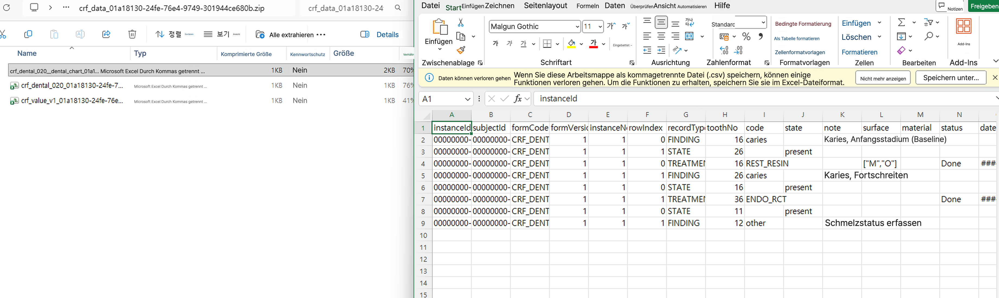
Der ZIP-Dateiname enthält die Auftragsnummer. Sie ist dieselbe wie auf dem Abschlussbildschirm 3.3.
Im Archiv liegt je Tabelle eine CSV-Datei. Neben der Haupttabelle werden Untertabellen getrennt angelegt. Enthalten sind nur Tabellen; die Anhangsdateien selbst sind nicht enthalten (siehe Hinweis 3.1).
Beim Öffnen in Excel erscheint der Hinweis, dass Daten verloren gehen können. Das ist typisch für CSV; die Originaldatei ist unverändert. Achten Sie nur beim Bearbeiten und Speichern darauf.
Die erste Zeile enthält die Spaltennamen, beginnend mit Instanz · Proband · Formularcode · Formularversion · Wiederholung; danach folgen die Eingabespalten.
Ab der zweiten Zeile stehen die eigentlichen Daten. Jede Zeile ist ein Datensatz.
Zu beachten
Unbedingt prüfen Datenschäden · Formular nicht abschließbar
- • Speichern Sie die CSV nicht einfach so aus Excel heraus. Excel kann lange Zahlen in Exponentialschreibweise umwandeln oder führende Nullen entfernen und die Werte beim Speichern so verändern. Prüfen Sie den Inhalt nur und schließen Sie die Datei, oder legen Sie für die Bearbeitung eine Kopie an. Für Einreichungen verwenden Sie die heruntergeladene Originaldatei.